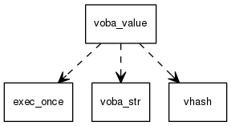

|
VOBA Value System
0.1
|
see http://wcy123.github.io/voba_value/index.html for more details
This is a rich value system to representing a lot of useful data structure, e.g. list, array, hash etc.
This is the corner stone for a new language voba, but it could be used independently without the language.
Basically, a value of voba_value_t is a 64-bit unsigned integer.
The least significant 3 bits is used to represent the type info, so that there are 8 basic types. Most of time, it is a pointer to 8-byte aligned region, so that the least 3 significant bits could be used as a type tag.
There are 8 basic types:
apply, see apply.h
 1.8.8
1.8.8